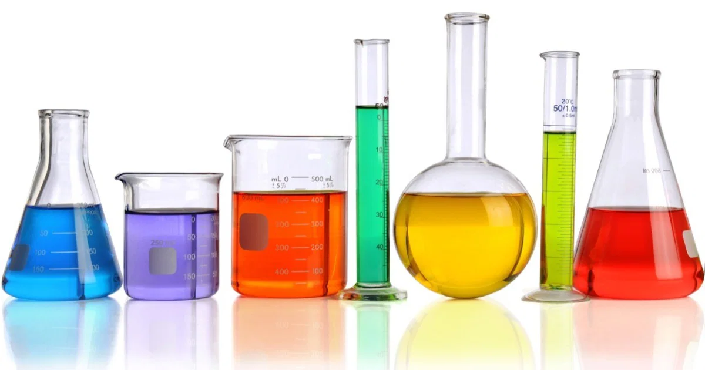

https://www.todamateria.com.br/solucoes-quimicas/
Soluções
No cotidiano, encontramos diversos materiais que parecem apresentar uma única aparência uniforme, como o ar que respiramos, a água do mar e algumas ligas metálicas. Apesar de serem constituídos por mais de uma substância, esses materiais podem formar sistemas homogêneos chamados soluções.
1. O que são soluções?
Uma solução é uma mistura homogênea formada por duas ou mais substâncias. Isso significa que seus componentes estão distribuídos uniformemente, de modo que não conseguimos distingui-los a olho nu em diferentes regiões do sistema.
As soluções apresentam apenas uma fase. Uma fase é cada porção de um sistema que possui propriedades uniformes e pode ser distinguida de outras porções, quando existem.
Por exemplo, quando dissolvemos açúcar em água e ele se dissolve completamente, obtemos uma solução homogênea. Já quando misturamos água e óleo, normalmente observamos duas fases, portanto o sistema não é uma solução homogênea.
2. Soluto e solvente
Os componentes de uma solução recebem nomes específicos:
- Soluto: substância que é dissolvida no solvente. Pode haver um ou mais solutos em uma mesma solução.
- Solvente: substância que dissolve o soluto e, geralmente, está presente em maior quantidade. É comum que determine o estado físico da solução.
Na água com sal, por exemplo, o sal é o soluto e a água é o solvente. Entretanto, nem toda solução contém água: o solvente também pode ser outro líquido, um sólido ou um gás, dependendo do sistema.
É importante lembrar que uma solução não precisa conter apenas duas substâncias. O ar atmosférico, por exemplo, é uma mistura homogênea de diversos gases.
3. Classificação das soluções quanto ao estado físico
As soluções podem ser classificadas de acordo com o estado físico do sistema resultante: sólido, líquido ou gasoso. Essa classificação não depende apenas do estado físico original do soluto, mas das características da solução formada.
3.1. Soluções gasosas
São misturas homogêneas de gases. Como os gases se misturam facilmente, podem formar soluções gasosas quando seus componentes estão distribuídos uniformemente.
Exemplo: o ar atmosférico seco é uma mistura gasosa composta principalmente por nitrogênio e oxigênio, além de argônio, dióxido de carbono e outros gases em menores proporções.
3.2. Soluções líquidas
São soluções cujo estado físico final é líquido. Podem ser formadas pela dissolução de sólidos, líquidos ou gases em um líquido, desde que os componentes sejam compatíveis e formem uma única fase.
Exemplos:
- Água com sal: sólido dissolvido em líquido.
- Água com etanol: mistura de dois líquidos miscíveis.
- Água gaseificada: dióxido de carbono dissolvido em água, enquanto o gás permanece dissolvido no líquido.
3.3. Soluções sólidas
São soluções cujo estado físico final é sólido. Um caso comum são certas ligas metálicas, materiais constituídos por dois ou mais elementos, dos quais pelo menos um é metal.
Exemplos:
- Latão: liga formada principalmente por cobre e zinco.
- Bronze: liga tradicionalmente formada principalmente por cobre e estanho.
- Ouro 18 quilates: liga metálica que contém ouro e outros metais, como cobre e prata, em proporções variáveis.
Nem toda liga metálica é necessariamente uma única fase homogênea: algumas apresentam mais de uma fase sólida. Por isso, a classificação depende da composição e da estrutura do material.
4. Solubilidade
A solubilidade é a capacidade de uma substância se dissolver em outra em determinadas condições, especialmente de temperatura e, no caso dos gases, de pressão.
Uma substância que se dissolve em outra é chamada de solúvel nessas condições. Quando sua dissolução é muito limitada, ela pode ser considerada pouco solúvel ou praticamente insolúvel.
A solubilidade depende da natureza das substâncias envolvidas e das condições do sistema. Por isso, não é correto afirmar que uma substância será sempre solúvel ou insolúvel em qualquer solvente.
Por exemplo, o sal de cozinha se dissolve em água, enquanto o óleo não se mistura homogeneamente com ela. Já o etanol e a água são miscíveis, isto é, podem formar uma mistura homogênea em diferentes proporções.
4.1. Influência da temperatura e da pressão
A temperatura pode alterar a solubilidade de uma substância. Para muitos sólidos dissolvidos em líquidos, o aumento da temperatura favorece a dissolução, embora existam exceções.
No caso dos gases dissolvidos em líquidos, o aumento da temperatura geralmente reduz a solubilidade do gás. Isso ajuda a explicar por que bebidas gaseificadas tendem a perder o gás mais rapidamente quando estão quentes.
A pressão também é importante para os gases: em geral, aumentar a pressão parcial de um gás sobre um líquido favorece sua dissolução. Quando uma garrafa de refrigerante é aberta, a pressão diminui e o dióxido de carbono começa a escapar na forma de bolhas.
5. Classificação das soluções quanto à quantidade de soluto
Considerando a quantidade de soluto dissolvida em relação à solubilidade nas mesmas condições, as soluções podem ser classificadas como insaturadas, saturadas ou supersaturadas.
5.1. Solução insaturada
É aquela que contém menos soluto dissolvido do que a quantidade máxima que o solvente consegue dissolver nas condições consideradas. Portanto, ainda é possível dissolver mais soluto, sem alterar essas condições.
5.2. Solução saturada
É aquela que contém a quantidade máxima de soluto que consegue permanecer dissolvida em determinadas condições de temperatura e pressão.
Em muitos casos, ao adicionar soluto em excesso a uma solução saturada, parte dele não se dissolve e permanece no fundo do recipiente. Entretanto, a presença de material não dissolvido não é obrigatória para que uma solução esteja saturada.
5.3. Solução supersaturada
É aquela que contém uma quantidade de soluto dissolvido maior do que a normalmente permitida pelo limite de solubilidade nas mesmas condições.
Esse tipo de solução é geralmente instável: uma perturbação ou a adição de um pequeno cristal do soluto pode provocar a formação de cristais e a saída do excesso de soluto da solução.
As classificações de saturação sempre dependem das condições consideradas. Uma solução que é saturada a determinada temperatura pode se tornar insaturada ou supersaturada quando a temperatura muda, dependendo de como sua solubilidade varia.
6. Concentração de uma solução
A concentração expressa a quantidade de soluto presente em uma determinada quantidade de solução ou de solvente. Ela permite comparar soluções mais concentradas e menos concentradas.
Uma solução é chamada de mais concentrada, em comparação com outra, quando apresenta maior quantidade de soluto em relação à mesma quantidade de solução, considerando a mesma forma de expressar a concentração.
Já uma solução mais diluída apresenta menor quantidade de soluto nessa comparação. Isso não significa, necessariamente, que ela contenha menos soluto no total: o volume ou a quantidade total de solução também precisa ser considerado.
A concentração pode ser expressa de diferentes maneiras, entre elas:
- Concentração comum: relaciona a massa do soluto ao volume da solução, frequentemente expressa em g/L.
- Concentração em quantidade de matéria (molaridade): relaciona a quantidade de matéria do soluto ao volume da solução, expressa em mol/L.
- Porcentagem: expressa a proporção de um componente em relação ao total, podendo ser baseada em massa, volume ou massa por volume.
Essas formas de expressar a concentração permitem descrever quantitativamente a composição de uma solução e serão importantes para a resolução de exercícios de Química.
7. Soluções, suspensões e coloides
Nem toda mistura que parece uniforme à primeira vista é uma solução verdadeira. As misturas podem ser diferenciadas de acordo com o tamanho das partículas dispersas e o comportamento de seus componentes.
- Soluções verdadeiras: são misturas homogêneas nas quais os componentes estão distribuídos em escala molecular ou iônica. Em condições comuns, não separam seus componentes por filtração simples.
- Suspensões: apresentam partículas relativamente grandes dispersas em outro material. Essas partículas podem sedimentar com o tempo e, em muitos casos, podem ser separadas por filtração. Exemplo: água com areia.
- Coloides: apresentam partículas dispersas de tamanho intermediário entre as soluções verdadeiras e as suspensões. Exemplos comuns incluem leite, neblina e gelatina.
Essa distinção é importante porque a aparência visual, isoladamente, nem sempre permite identificar corretamente o tipo de mistura. O leite, por exemplo, parece uniforme, mas é uma dispersão coloidal, não uma solução verdadeira.
Resumo
- Uma solução é uma mistura homogênea de duas ou mais substâncias.
- O soluto é dissolvido; o solvente é o meio que dissolve o soluto.
- As soluções podem ser sólidas, líquidas ou gasosas.
- A solubilidade depende das substâncias envolvidas e das condições do sistema.
- Quanto à saturação, uma solução pode ser insaturada, saturada ou supersaturada.
- A concentração expressa a quantidade de soluto em relação a uma quantidade definida de solução ou solvente.
- Soluções verdadeiras, suspensões e coloides são tipos diferentes de dispersões.
Exercícios de fixação
1. Defina solução e explique a diferença entre soluto e solvente.
2. Classifique os sistemas a seguir como exemplos de soluções gasosas, líquidas ou sólidas:
- Ar atmosférico seco.
- Água com sal completamente dissolvido.
- Latão homogêneo.
- Etanol misturado homogeneamente com água.
3. Explique por que água e óleo, em condições comuns, não formam uma solução homogênea.
4. Diferencie solução insaturada, saturada e supersaturada.
5. Por que uma bebida gaseificada tende a liberar mais gás quando é aquecida e quando sua garrafa é aberta?
6. Explique a diferença entre uma solução verdadeira, uma suspensão e um coloide. Dê um exemplo de cada.
7. Uma pessoa adiciona sal à água e observa que uma parte permanece no fundo do recipiente. O que isso pode indicar sobre a solução? Explique considerando as condições de temperatura e a quantidade de sal adicionada.
8. Duas soluções apresentam volumes iguais, mas quantidades diferentes de soluto dissolvido. Qual delas é mais concentrada? Justifique.
O conteúdo dessa página foi gerado por IA pois a Moderna PLUS não se aprofunda nos conceitos em questão.
Fontes consultadas e complementares: